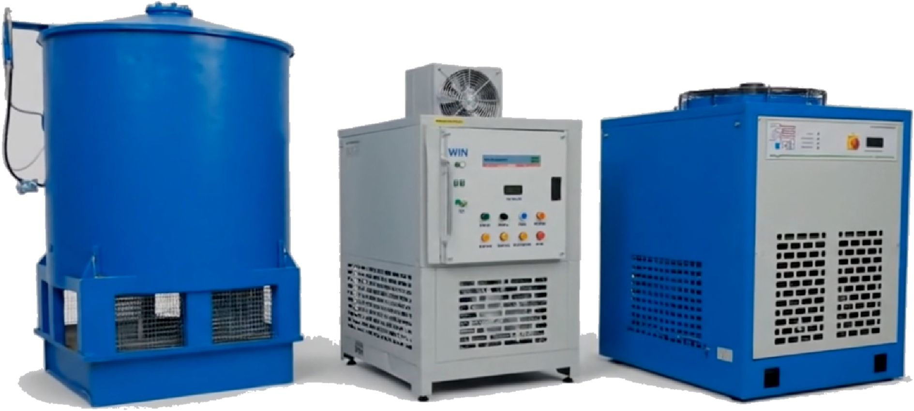

Industrial Ice Flake Machines (1 to 30 Tons/Day)
Direct Coimbatore manufacturer of heavy-duty industrial flake ice machines and turnkey ice plants. Built with precision stationary vertical SUS304 stainless steel evaporator drums, Bitzer/Frascold semi-hermetic compressors, and water-cooled shell-and-tube condensers for marine seafood harbors, poultry abattoirs, chemical dye synthesis, and concrete batching dams.

What is an industrial flake ice machine? An industrial flake ice machine is an automated refrigeration plant designed for continuous production of dry, subcooled flat ice flakes (-5°C to -8°C, thickness 1.5 mm to 2.2 mm). Operating via a vertical stationary stainless steel evaporator cylinder and internal rotating helical scraper blade, flake ice delivers rapid thermodynamic heat exchange with zero sharp edges, making it the globally preferred cooling medium for seafood harvesting, poultry processing, chemical reactor temperature regulation, and concrete hydration temperature control.
Heavy-Duty Mechanical & Refrigeration Architecture
Engineered from ground up to eliminate common operational failures in tropical climates and marine processing environments.
Zero-Leak Stationary Vertical Drum
Traditional horizontal drum machines suffer chronic refrigerant leaks at rotary carbon shaft seals. Win Equipments uses a stationary vertical drum where all refrigerant lines are welded static. Only the lightweight internal SUS304 spiral ice reamer rotates.
True Sub-Cooled Dry Ice (-5°C to -8°C)
Produces dry, non-agglomerating ice flakes that do not melt into wet slush during storage. Flakes remain free-flowing for easy pneumatic conveying, screw discharging, or manual shoveling without bridging inside cold rooms.
Multi-Compressor Staging & Redundancy
Equipped with dual semi-hermetic compressors (Bitzer/Frascold) on larger tonnage plants (as shown in our factory photo). Dual circuits allow partial-load energy conservation and 50% emergency backup during maintenance intervals.
Microprocessor PLC Automation
Integrated PLC panel monitors high/low refrigerant pressures, water level sensors, oil pressure differential, motor thermal overload, and automatic bin-full optical cutoff sensors for fully unattended 24/7 continuous operation.
Technical Specifications: WFI Series Flake Ice Plants (1 to 30 TPD)
Ratings based on 25°C ambient air, 20°C water inlet temperature, and R404A / R507 refrigerant.
| Model | Capacity (24h) | Refrigeration Power (kW) | Compressor Make / HP | Cooling Method | Water Inlet | Ice Temp | Flake Thickness | Skid Dimensions (L×W×H mm) | Inquiry |
|---|---|---|---|---|---|---|---|---|---|
| WFI 010 | 1,000 kg (1 Ton) | 4.8 kW | Danfoss / Bitzer (5 HP) | Air / Water Cooled | 1/2" BSP | -5°C to -8°C | 1.5 – 2.0 mm | 1,350 × 1,050 × 980 | Quote |
| WFI 020 | 2,000 kg (2 Tons) | 8.5 kW | Bitzer / Frascold (7.5 HP) | Water / Air Cooled | 3/4" BSP | -5°C to -8°C | 1.5 – 2.2 mm | 1,550 × 1,200 × 1,150 | Quote |
| WFI 030 | 3,000 kg (3 Tons) | 12.2 kW | Bitzer / Frascold (12 HP) | Water-Cooled Shell & Tube | 3/4" BSP | -5°C to -8°C | 1.5 – 2.2 mm | 1,750 × 1,350 × 1,300 | Quote |
| WFI 050 | 5,000 kg (5 Tons) | 18.5 kW | Bitzer Semi-Hermetic (20 HP) | Water-Cooled Shell & Tube | 1" BSP | -5°C to -8°C | 1.8 – 2.2 mm | 2,050 × 1,550 × 1,600 | Quote |
| WFI 100 | 10,000 kg (10 Tons) | 38.0 kW | Dual Bitzer Rack (40 HP total) | Water-Cooled Shell & Tube | 1.5" BSP | -6°C to -8°C | 1.8 – 2.2 mm | 2,600 × 1,850 × 1,950 | Quote |
| WFI 150 | 15,000 kg (15 Tons) | 56.0 kW | Dual Bitzer Rack (60 HP total) | Water-Cooled Shell & Tube | 2" Flange | -6°C to -8°C | 1.8 – 2.2 mm | 3,100 × 2,100 × 2,250 | Quote |
| WFI 200 | 20,000 kg (20 Tons) | 74.0 kW | Semi-Hermetic Screw Comp (80 HP) | Water-Cooled Shell & Tube | 2.5" Flange | -6°C to -8°C | 2.0 – 2.2 mm | 3,600 × 2,250 × 2,400 | Quote |
| WFI 300 | 30,000 kg (30 Tons) | 112.0 kW | Dual Screw Compressor (125 HP) | Water-Cooled Shell & Tube | 3" Flange | -6°C to -8°C | 2.0 – 2.2 mm | 4,200 × 2,400 × 2,650 | Quote |
* Custom turn-key packages include insulated stainless steel ice storage bins (with automatic rake discharge system), water pre-chillers, and custom voltage configurations (380V/60Hz, 460V/60Hz export).
Mission-Critical Applications for Win Flake Ice
Supplying seafood exporters, poultry plants, chemical conglomerates, and infrastructure contractors across India and Middle East.
Commercial Fisheries & Seafood Harbors
Subcooled flakes surround fish and prawns with 100% surface contact, reducing core temperature rapidly to 0°C without bruising sensitive scales or damaging flesh. Compatible with coastal freshwater and seawater ice machines.
Poultry Processing & Meat Abattoirs
Essential for continuous poultry spin chillers to rapid-chill eviscerated carcasses below 4°C within statutory time limits, preventing microbial growth and maintaining HACCP food safety standards.
Concrete Pre-Cooling in Mega Dams & Bridges
In hot weather construction (ambient > 35°C), hydration heat can crack massive concrete structures. Win flake ice replaces mixing water directly, absorbing 80 kcal/kg latent heat to maintain pour temperature below 28°C.
Chemical Dye & Pharmaceutical Synthesis
In exothermic diazotization and sulfonation reactions in dye manufacturing, adding subcooled flake ice directly into reaction vessels absorbs explosive heat spikes safely without diluting reaction stoichiometry.
Frequently Asked Questions: Flake Ice Machines
Key refrigeration, maintenance, and facility planning specifications for flake ice production.
What is the difference between flake ice and tube/cube ice?
Flake ice is flat, thin (1.5–2.2 mm), and sub-cooled (-5°C to -8°C), providing significantly greater heat exchange surface area than thick tube or block ice. Because it has no sharp angular edges, it conforms around irregular biological products (fish, meat, vegetables) without damaging tissue, and melts evenly without forming solid re-frozen blocks.
Why is a water-cooled condenser recommended for plants above 3 Tons?
In tropical Indian summer ambients (35°C to 45°C), air-cooled condensers suffer high head pressures and reduced ice yield. A water-cooled shell-and-tube condenser connected to a Win Equipments FRP Cooling Tower maintains condensing temperatures at 35°C–38°C, delivering up to 25% lower electrical power consumption (kW/ton of ice) and stable ice output year-round.
What maintenance is required for the vertical evaporator drum?
Because the drum body is static and fabricated from heavy-gauge stainless steel, maintenance is minimal. Routine upkeep consists of checking the food-grade grease in the top scraper gear drive every 6 months, inspecting the water distribution pan nozzles, and periodic descaling of the water circuit depending on feed water hardness.
Do you supply automated ice storage bins and cold storage rooms?
Yes. Win Equipments manufactures turnkey ice storage solutions including polyurethane (PUF) insulated cold rooms, stainless steel storage bins with automatic screw discharge conveyors, and rake ice delivery systems for direct batching into insulated trucks or concrete mixers.
Request Technical Quote for Industrial Ice Flake Machine
Receive sizing calculations, electrical power schedules, and quotation within 24 hours.